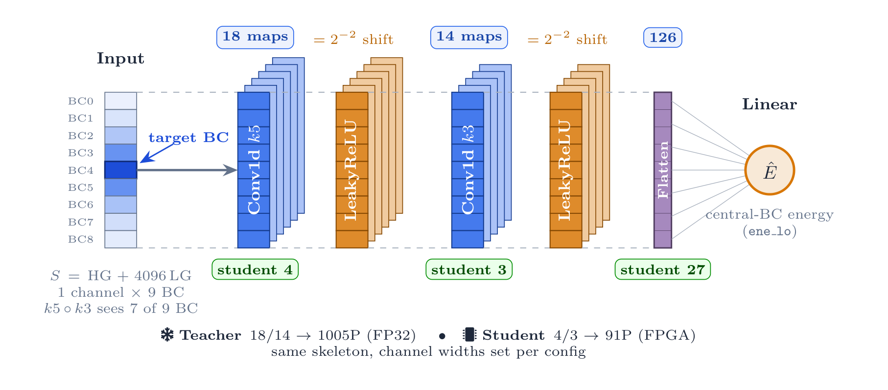
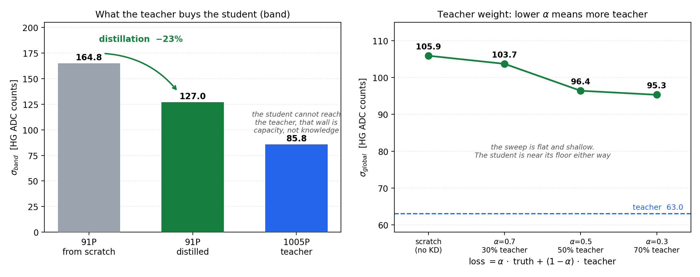
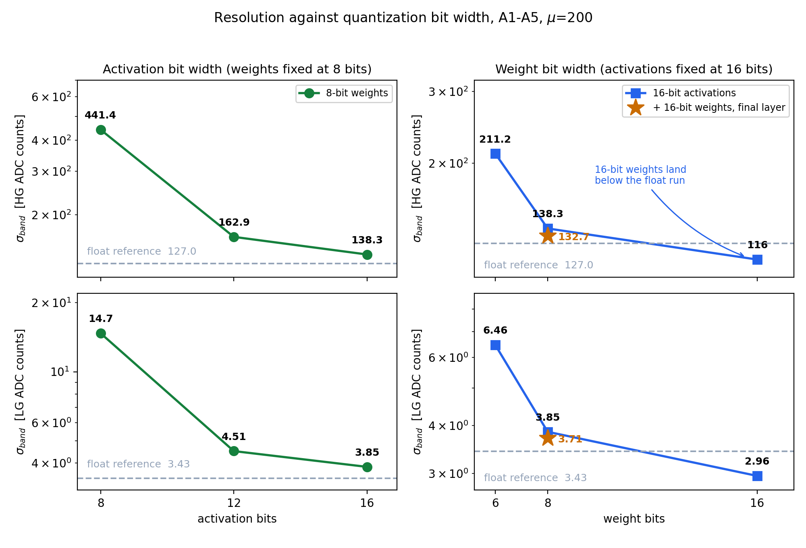
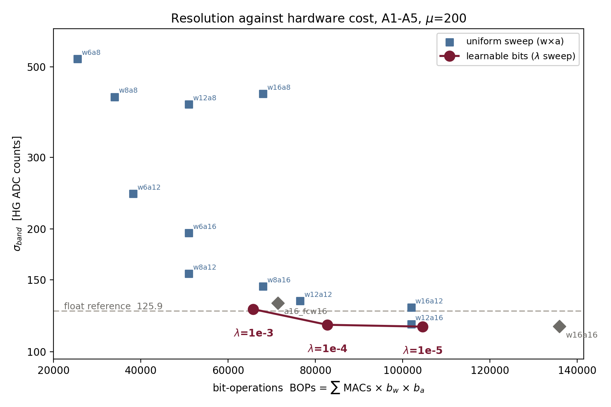
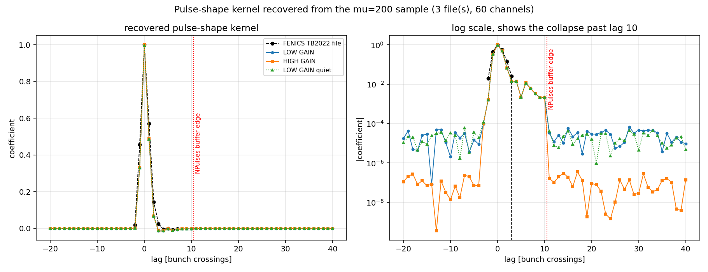

Introduction
Hello!! 👋 I am Bibhor Puhan a.k.a. XBastille. Over the summer I worked with the Tile Calorimeter group at IFIC in Valencia on the detector's energy reconstruction, through Google Summer of Code with CERN-HSF. This is the final write-up, and it covers the whole project, so it goes past where the midterm post stopped.
All the code is public. The pipeline is in tilecal-nn-signal-reconstruction, and the algorithm that came out of it now lives in ATLAS Athena.
The short version
The original question that started the project, was, whether a neural network could replace Optimal Filtering for TileCal energy reconstruction at the HL-LHC pile-up, and whether such network could be made small enough to fit inside the detector's firmware.
It turns out that it can, and we did a lot more than the project required. There is now a 91 parameter quantised 1D-CNN placed and routed on the real target FPGA, spanning all 77 channels, meeting all the timing constraints, and a bit-exact integer emulator of that firmware merged into ATLAS Athena. Read what got merged at the bottom.
The problem
TileCal measures hadronic showers. Light from scintillating tiles reaches photomultipliers, and the resulting pulse is digitised at 40 MHz across roughly seven samples. The algorithm deployed today is Optimal Filtering, a seven-coefficient linear filter, and it is genuinely good under the assumption it was designed for, which is that the noise is stationary and Gaussian.
At µ = 200 that assumption dies. The dominant noise is no longer electronics, it is other collisions. Bunch crossings are independent events, but pulses last about seven crossings, so they pile on top of each other. The consequence took me a while to absorb. A bunch crossing whose true energy is zero can still show a large ADC value, purely from its neighbours bleeding into it. That is out-of-time pile-up, it is not Gaussian, and a linear filter cannot see it coming. My note to myself at the time was that the quiet crossings are the hard ones, which sounds backwards until you plot it.
That is also why the network reads a nine-sample window and not seven because it needs context on both sides of the crossing it is being asked about.
And the constraint is what makes the problem interesting. Reconstruction runs in the TilePPr firmware on a
Xilinx Kintex UltraScale (xcku115-flva1517-2-e), serving 77 channels per device. A network here is
not small because it has few parameters. It is small because seventy-seven copies of it have to fit alongside
everything else on a board nobody is going to replace.
The latency number is easy to misread. TilePPr allots 225 ns, nine bunch crossings, to the block labelled energy reconstruction plus sample delay. That is not 225 ns of compute. A nine-sample window takes nine crossings just to collect, so most of that budget is spent waiting. What actually binds is throughput. The network has to pipeline at an initiation interval of one crossing, 25 ns, because at 40 MHz the data never stops arriving. Getting from seven cycles down to one turned out to be the hardest problem in the project.
The data, and the encoding that shaped everything
Everything here in simulation at µ = 200, minimum-bias pile-up with an injected flat signal component to populate the dynamic range. No real data and no test beam.
This dataset covers 230000 bunch crossings across 23 files, for long-barrel A-layer cells A1 to A5 split in 70 / 15 / 15, about 24 % of windows survived the quality cuts, and we have for a test set of 10659229 windows. Each number has had to come by me opening the ROOT files and counting because the other times were spent from working from numbers I had read out of a paper describing a completely different dataset. It is not that the numbers could not come but they were wrong.
TileCal reads each channel in 2, different, gains a factor of about 40 apart. 2 input channels and 2 output heads was my instinct. Something better was suggested in our meeting on 3 June by Alberto Valero i.e. to pack both inside a single 24 bit integer per sample, with high gain in the low twelve bits and low gain in the high twelve.
S=HG+4096·LG
This keeps both readings losslessly instead of choosing one per sample, so there is one model and one output spanning the whole dynamic range with no gain-branch logic anywhere. It is the largest architectural decision in the project and it was not mine.
It makes sense being careful about what this buys and does not buy. The published reference model also trains a single network on a gain-mixed input, so it needs the same 77 instantiations. The difference is that its rule picks one gain per sample and discards the other, while this encoding carries both. It is a real distinction, but it is not a saving in instantiation count, and I have seen it described that way, including by me. I trained the models on 1 machine at IFIC, two 48-core EPYC 9474F processors with an RTX A6000 Ada at 48GB and two H100 NVL at 94 GB.
Part 1, the smallest network that works
2 1D convolutions, 2 activations, 1 linear layer.

A kernel of 5, followed by a kernel of 3, gives the central crossing a receptive field of 7 of the 9 samples,
which is roughly a pulse length. The activation is LeakyReLU(0.25), chosen because a slope of one
quarter is a two-bit shift and hence should cost no multiplier. It made sense to me to check and not to assume,
so I read the generated HLS C++.
// firmware/defines.h
typedef ap_ufixed<1,-1> param_t; // one bit, weight 2^-2: exactly 0.25
It survives as a compile-time literal in a one-bit container and not as a lookup table.
A capacity sweep found a clear knee. 533 parameters gives a band of 101.8, 1005 gives 85.8, and 2005 gives 85.5, which is flat. All twenty energy bins improved between 533 and 1005, so this is real capacity, not a global-average illusion. The floor lies around 1000 parameters, which is far too many for 77 instantiations.
So distillation buys back what capacity cannot. The 1005-parameter model becomes a teacher, and a 91-parameter
student is distilled from it with a loss of α·L_truth + (1−α)·L_teacher.

| Model | Params | Band (HG ADC) | Global std | LG band |
|---|---|---|---|---|
| 1005P teacher | 1005 | 85.8 | 63.0 | 2.70 |
| 91P student, distilled (α 0.3) | 91 | 127.0 | 95.3 | 3.43 |
| 91P student, trained alone | 91 | 164.8 | 105.9 | 4.72 |
Distillation buys about 23% of the band at a fixed 91 parameters, without adding a single weight. The distillation study has the full sweep behind that number, and I presented the result in a TileCal Data Preparation and Performance meeting on 6 July, which was my first ATLAS talk. The notation is important reading carefully, as α weights the truth term, so α = 0.3 means the loss is 70% teacher-matching instead of a light touch of teacher.
These are per-bin numbers, and that choice was made by Luca before there were any results to argue about. A single standard deviation over the whole test set is misleading here, as most crossings lie in the near-zero bin, so a global number mostly measures how well the model does on almost-empty events. So we bin by true energy, take the standard deviation in each bin, and average those. That is what the band column means in each table here. It is not interchangeable with a global standard deviation, and mixing the two conventions is a easy way to end up comparing numbers that are not comparable.
Several things didn't work. Hint distillation, teacher-assistant distillation, and teacher ensembling all made the student worse. Each of those changes how the teacher's knowledge reaches the student and not how much room the student has to store it and none of these worked, so on this architecture the remaining gap looks like a capacity limitation rather than a transfer problem. That is an observation about the things I tried, not a claim that 91 parameters cannot be pushed further.
One caveat about the baseline, because it is the number people reach for first. Our Optimal Filtering implementation is a single dot product against samples pedestal-subtracted by the per-window minimum. With pile-up in the window that minimum is below the true pedestal, which biases the amplitude upward, and there is no iterative phase fit. Ours ends at a band of 890.6, where the group's own reference puts a properly configured OF around 250. So this is an upper bound on OF's error and not a fair OF, and I would not compute a ratio against it. That the network handles HL-LHC pile-up substantially better than OF is the premise of this work and is not in dispute. Our particular OF implementation is just not the right number to size that gap with.
Part 2, fixed point
A float32 network isn't going anywhere near an FPGA. So the next step is quantisation-aware training in Brevitas, exported to hls4ml via QONNX. Every quantiser is fixed-point per-tensor, so all scales are powers of 2 and cost a bit shift instead of a multiplier. The quantisation study goes into this section in more detail than I can manage here.

The 2 axes aren't anywhere near symmetric, and that is the main finding. Activations dominate. With 8-bit activations the band sits between 400 and 500 high-gain ADC counts no matter how wide the weights are, against 116 for the model that eventually shipped, so 8-bit activations are just unusable here. Weights are far more forgiving than I expected.
The reason is specific to the concatenated input. S=HG+4096·LG packs 4 orders of magnitude into one number, so a per-tensor 8-bit quantiser sets its scale by the large low-gain values and crushes the small high-gain signals at the input. You can see it happen. The model begins to emit identical predictions, to seven decimal places, for genuinely different small inputs. The float-optimal input encoding is not the quantisation-optimal one. I tried four different input transforms to squeeze the range into 8 bits, and none of them worked, which I believe it fits the explanation. The problem is the number of distinct output levels and no reversible transform would create levels that weren't there.
Letting the network choose its own precision was Fernando's suggestion, and it's my favourite piece of this half. Make the bit width a trainable parameter with a penalty on the total, warm started from the uniform 16-bit model. What comes out varies per layer, 12 on the first convolution, 10 the second, 14 on the linear, activations between 13 and 16. It matches the best uniform point for about 19% less bit operations.

It beats the sweep for a structural reason rather than a magical one. Uniform sweep can only ever examine uniform pairs, and there's no cell on that grid reading 12, 10, 14. There's a second result hidden inside it, that if you turn the penalty up until it dominates the task loss and set the floor at 2 bits, so the network is completely free to collapse, it still refuses to go below 9 bits anywhere. That's an independent argument, arrived at by the optimiser and not by me! that 8 bits doesn't fit this dynamic range.
Then there is the result I still cannot fully explain. The 16-bit quantised model beats the float32 model it was warm-started from, 115.4 against 125.9 on the finer binning used throughout the quantisation. That is unexpected.
I had three candidate explanations and no way to choose between them, so I put all three to the meeting. Obvious suspect was that the quantised runs also drop the distillation teacher, and training on pure truth after annealing the teacher away is a known free improvement. So I ran the control Luca asked for, of continuing the float student for the same 100 epochs at the same learning rate with no quantisation and no teacher. It came back at 127, right where it started.
That denies the restart and denies the teacher. Whatever is happening takes place in the quantisation path. The control does not tell me how about any mechanism in that path, and I never constructed an experiment to distinguish between them. So the claim ends where the control ends. It is a number that I like with a mechanism that I cannot name, so I decided to write it that way instead of disguise it.
Part 3, firmware
The quantisation and firmware results combined to go to a TileCal Data Preparation and Performance meeting in August, and those slides carry the synthesis and place-and-route detail this section summarizes.
At the default 200 MHz the exported design came back with an initiation interval of seven cycles, which is 35 ns. That misses a bunch crossing, so a single engine could not keep up with a single channel, never mind 77. Retargeting to 280 MHz makes those seven cycles exactly 25 ns, but one engine per channel then means 77 engines at roughly 27,000 LUT each, which is about 317% of the device.
The fix was to read my own synthesis report properly. Everything except the 2 convolutions was already at initiation interval 1, because hls4ml pipelines its dense engine and does not pipeline its convolution engine. And a nine-sample window with same padding is not really a convolution once it is unrolled. It is a matrix multiply with a fixed pattern of zeros. So both convolutions are rewritten as dense layers carrying the block-Toeplitz expansion of the same trained kernels, with the same 91 parameters and no retraining. The converter checks equivalence on 50,000 events and refuses to write a checkpoint if it disagrees.
| conv form | dense form | |
|---|---|---|
| Initiation interval | 7 cycles | 1 cycle |
| LUT per channel | 27,000 | 3,000 |
| DSP per channel | 80 | 52 |
DSP per engine goes from 80 to 366, which looks terrible for about a second until you see why. At interval 7, seven multiplies were time-sharing one multiplier. At interval 1 they cannot share, so nearly every multiply needs its own hardware. That factor is measuring the sharing that used to be there, not new arithmetic. Per channel served, it is cheaper on both axes.
On a separate machine, we ran the Synthesis and place and route. The machine had four cores and about 24 GB of RAM with vitis HLS and Vivado 2022.1, where the 11 engine route takes about an hour. The design was then placed through a full out-of-context, so the I/O pad delays are not charged against a block that will end up inside other firmware. Eleven engines, time-multiplexing 7 channels, cover all 77.
| value | |
|---|---|
| Timing | WNS +0.012 ns, 0 of 772,070 endpoints failing |
| Clock | 280.034 MHz |
| DSP | 4,026 (72.9%), exactly 11 × 366 |
| LUT / FF | 231,123 / 334,760 |
The DSP total landing on exactly 11 × 366 is the assurance that no engine was sneakily optimised away, the failure mode that would render the whole run meaningless.
One thing I did not see coming, and is the most useful firmware lesson here, the KU115 is not 1 die, but 2 on an interposer, connected with precisely 17,280 wires, and that is the only path between them. Placed unconstrained, the placer asked for 35,413 crossings against those 17,280 and halted with an error and didn't even try attempting. The fix is a hand-written floorplan, 2 pblocks in the place-and-route script, six engines on one die and five on the other, so the only thing crossing is the register wrapper boundary, after which it uses 2 wires instead of 35,413.
The practical consequence is that this block cannot be dropped onto the device as an anonymous block, it must be floor-planned. Let me be precise that I'm referring to a hand-written constraint and not something the tool deduced on its own, and it's important to the entity that integrates it later. The critical path is also not what I expected. It is 96% routing delay with zero logic levels between registers, so essentially nothing but wire.
Three caveats related to every number above. The margin is 12 picoseconds, which is met repeatably but which nobody should call comfortable. This is our block alone on an empty device, so it says nothing about congestion once the rest of the TilePPr firmware surrounds it. And it is built on Vitis HLS 2022.1, one release below what hls4ml officially supports.
Part 4, into ATLAS Athena
Luca set the requirement here, the offline algorithm must emulate the firmware exactly, same integers and same rounding, because the trigger simulation must be as what the detector actually does, approximately right is not useful.
Turns out it is achievable, because every quantiser scale in the exported model is a power of 2 and every zero-point is 0, meaning the whole network reduces to int64 arithmetic plus shifts with two helper functions for the rounding and saturation modes.
The numeric details are load-bearing in a way I would not have guessed, two ablations each run against 100 reference events. Skipping the per-product rounding before accumulation gives 19 of 100 outputs wrong, using truncation instead of round-half-even gives 83 of 100 wrong. So the emulator rounds each product into the accumulator type before adding it, line carrying a surprising amount of weight.
The gate was zero-tolerance integer equality and not a small residual, and it passed on 4096 of 4096 shard events and 100 of 100 test-bench events, producing identical integer codes against the hls4ml C simulation.
The Tile.doTileNN flag is deliberately additive, it never suppresses the existing reconstruction,
it can never resolve to the default raw-channel container, because the network output is uncalibrated firmware
emulation and must not silently reach cell-making. Four of four CI tests pass with no thread-safety, cppcheck or
flake8 warnings.
Reviewing my own contribution against ATLAS conventions was genuinely educational, the algorithm is reentrant
with a const execute, every counter is an atomic, and per-event problems are counted and reported
once in finalize (not logged per event), because an error-level message inside an event loop kills
the job.
Part 5, the pedestal follow-on
Okay, so this was never in the GSoC scope. Luca raised it in late July as next-phase work and I took it as far as the remaining time allowed, and the wrap-up talk covers it end to end.
The idea is that every pulse leaves a long tail behind it, so the baseline at any crossing is the sum of the tails of everything before it. Predict that, subtract it, and the network sees clean samples. There is no configuration archived next to the ROOT files, so instead of reading the generator settings, I measured them, by regressing the digitised samples against the true energies at every lag.

The regression validates itself, which is what made me trust it. It recovers the pedestal at 99.80 where the simulation used 100, and the peak at 1.000005 where the pulse shape is normalised to exactly 1. Neither of those was given to it.
It also showed something unexpected. The coefficients are healthy out to lag +10, then collapse by about a factor of a hundred and stay flat out to +40. That is not physics, it is a buffer edge. The generator keeps a fixed number of pulses of history and everything older is gone, and where the edge falls implies 21 pulses. Antonio Gómez Delegido, who generated the sample, confirmed it directly. The production had used the generator's default buffer of 21 and the truncation was unintentional. Having a measurement made from the outside confirmed at the source was the best moment of the summer.
The correction itself is written and it closes. The simulation sets every channel's pedestal to exactly 100 and the code is never told, and it returns 99.77 in high gain and 99.56 in low gain. That took 2 rounds to reach, because ADC rails and the leading edge of the next pulse both bleed into the estimate if you let them. Make sense noting that this checks the implementation and not the underlying pulse-shape model, since that shape was fitted on the same sample.
What the correction does not do is shrink the input word, which is where the original motivation for it came from. Recentring works, and the median high-gain sample drops from 116 counts to about 1, but the top of the range is in-time signal and not pedestal. Even corrected, 8 bits would still clip 18% of high-gain samples. I measured that using truth, which is the best any correction could manage, so a better predictor does not rescue it.
One thing I found auditing my own code which is important mentioning it. The correction runs on the sample stream before it is cut into windows, so 4 of the 9 samples in each window are modified using the true energy of the central crossing, which is exactly what the network is asked to predict. Its effect is to remove target information rather than add it, so it should make the task harder, but it is still preprocessing that depends on the answer. Corrected and uncorrected results are not comparable without saying so.
What got merged, what did not, and what is left
Two repositories are mentioned. The ATLAS Athena one is public, so those merge requests are linked directly. The other one, IFIC TileCal, is the internal one, which is not public, so those are referred to by their merge request number, and the code is mirrored publicly.
| ATLAS Athena | Merge request | Status |
|---|---|---|
TileRawChannelNNMaker and TileNNEmulator |
!90138 | Merged |
Tile.doTileNN configuration flag |
!90205 | Merged |
| IFIC TileCal (internal) | Merge request | Status |
|---|---|---|
| Teacher model, dual-gain input, preprocessing and plotting pipeline | !16 | Merged |
| Knowledge distillation and the sub-100-parameter student | !19 | Merged |
| Quantisation-aware training for the FPGA student | !20 | Merged |
| Learnable bit width, dense rewrite, export, firmware scripts, pedestal correction | !21 | Merged |
The public mirror of this code lives here, tilecal-nn-signal-reconstruction.
Not completed
- No physics validation on real data. Every number in this post is a simulation! Test-beam data decode, giving 16 samples instead of 9, and the pit calibration runs I could find were single-gain. This is the largest gap in the work and it belongs first in this list.
- No training run on pedestal-corrected inputs. The correction is implemented, validated, and documented, but the retrain has not been done (that would quantify how much it helps!). This should be relatively straightforward i.e run the full training preprocessing, train, calibrate, and rush the number during evaluation week would have been worse than no number at all. Agreed with my mentors that this is follow-up work.
- The "quantised beats float" mechanism is not isolated. The control rules out 2 possible explanations and localizes the effect, but doesn't identify the mechanism.
- The pulse-shape mismatch is unexplained, after 4 possibilities have been ruled out.
- Engine-to-transceiver matching on the FPGA. The 6/5 die split is compatible with the data arrival pattern, but not actually done.
- µ dependence. Pavel Starovoitov asked "How does the model perform at mu=160 or even 180, rather than 200?", and this has not been tested.
Left to do
- Retrain on corrected inputs and quantify the benefit of the pedestal correction.
- Regenerate the simulation with a longer pulse-history buffer, re-fit the correction against it since it will change the measured pulse shape.
- Decide on a causal form for the correction in firmware, or accept the convergence-time degradation.
- Move the conditions data of the network out of a JSON file into the ATLAS conditions database.
- Validate on real dual-gain data when a nine-sample source exists.
What I would tell next year's contributor
Settle the metric before you have results. The most helpful thing anyone did for me was Luca insisting on the per-bin band before there was anything to argue about. If I had kept it that way, I would have reported the global standard deviation as the default from any training script, and this was also the number that flatters this model most, as almost all crossings are near-empty and easy. Picking how you are going to be judged, before you can see which choice makes you look better, is most of the work.
Every real bug I hit had a plausible number instead of error. The gain-mixing, the fixed-point container that silently clipped a 24-bit input to 16, the warm start that quietly dropped learned activation scales. None of them crashed. And this is why the code now raises rather than coping, and why "it ran" stopped counting as evidence of anything.
Write the closure test before the thing it tests. The pedestal correction shipped 3 times before it closed, and both failures were effects already sitting measured in a log I had written myself a week earlier. A test that recovers a value the code was never told beats any amount of staring at the code.
Hand people the soft spot yourself. I gave my first ATLAS talk in July, and the slide I cared most about was the one with a result I could not explain. Leading with it, and saying plainly that I could not separate the hypotheses, went far better than waiting to be asked. The same was true of the target leakage in the pedestal correction. Volunteering it was worth more than the code was.
Thanks
To Luca Fiorini and Fernando Carrió, who gave a significant amount of their time, provided thorough corrections, and pushed back exactly when they should have. To Alberto Valero for suggesting the encoding of the input, which completely changed my project. To Antonio Gómez Delegido for checking the buffer at the source and taking a stranger's measurement seriously. To Francesco Curcio, whose work my results are measured against. To Pavel Starovoitov and the TileCal DPP group for asking me questions that completely changed what I was working on. And finally, to CERN-HSF and the IFIC group for providing the compute to do this work, the means to do it, and for being patient during the process.